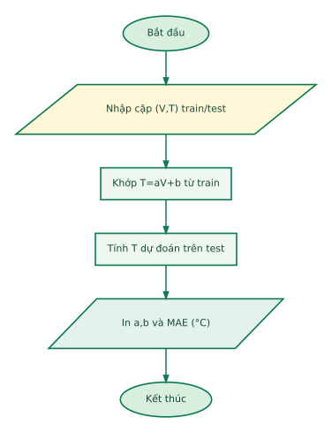

Khóa học / Mô-đun 4 / Bài 15
01 Mục tiêu và kiến thức tiên quyết
- Phân biệt nội suy với ngoại suy và hồi quy.
- Ước lượng hệ số mô hình tuyến tính bằng numpy.polyfit.
- Đánh giá sai số MAE trên dữ liệu kiểm tra riêng, diễn giải giới hạn.
Kiến thức tiên quyết: bài trước, kiến thức lập trình tương ứng.
02 Tình huống kỹ thuật
Hiệu chuẩn một cảm biến tuyến tính giả định bằng các cặp điện áp–nhiệt độ. Tách dữ liệu dùng để xây dựng mô hình và dữ liệu kiểm tra để đánh giá sai số dự đoán.
Dữ liệu huấn luyện giả định V=[0,5;0,75;1;1,25;1,5] V, T tham chiếu xấp xỉ [0;25;50;75;100] °C.
Hệ số a,b; MAE trên hai cặp kiểm tra riêng, có đơn vị °C.
03 Kiến thức và thuật ngữ cốt lõi
Nội suy
Nội suy tìm giá trị giữa các mốc đo theo giả định hàm phù hợp. Ngoại suy ngoài miền đo có rủi ro cao, đặc biệt khi cảm biến phi tuyến hoặc điều kiện vận hành thay đổi.
Khớp mô hình tuyến tính
Mô hình T=aV+b được ước lượng bằng bình phương tối thiểu. Hệ số a có đơn vị °C/V, b có đơn vị °C nếu V tính bằng volt.
Kiểm tra độc lập
Dữ liệu dùng để khớp không đủ chứng minh khả năng dự báo. Cần dùng điểm kiểm tra riêng và báo sai số dựa trên số đo tham chiếu.
MAE/RMSE
MAE là trung bình trị tuyệt đối sai lệch, cùng đơn vị °C; RMSE nhạy hơn với sai lệch lớn. Không thể gọi “đạt chuẩn” nếu chưa có yêu cầu kỹ thuật cụ thể.
04 Xây dựng và kiểm tra thuật toán
Trước khi xem chương trình, hãy đọc dữ liệu đầu vào, chọn điều kiện rẽ nhánh hoặc lặp, rồi dự đoán kết quả. Mã giả mô tả ý nghĩa thuật toán; không phải cú pháp Python thực thi được.

Mã giả
Lần vết các bước phân tích
Đây là lần vết các dòng mã giả, không phải trình thông dịch Python. Tự kiểm tra nhánh điều kiện bằng bảng ca kiểm thử ở mục 07.
05 Chương trình Python đã kiểm tra
Đọc mã, dự đoán kết quả và chạy tệp bai_15.py trong thư mục code. Các mã bài 9 trở lên có thể cần dữ liệu đi kèm từ thư mục data.
import numpy as np
v_train = np.array([0.50, 0.75, 1.00, 1.25, 1.50])
t_train = np.array([0.2, 24.9, 50.1, 75.2, 99.8])
a, b = np.polyfit(v_train, t_train, deg=1)
v_test = np.array([0.625, 1.375])
t_test = np.array([12.3, 87.6])
du_doan = a * v_test + b
mae = float(np.mean(np.abs(du_doan - t_test)))
print(f"a={a:.2f} °C/V, b={b:.2f} °C")
print(f"MAE={mae:.3f} °C")
assert v_test.min() >= v_train.min() and v_test.max() <= v_train.max()
06 Thử nghiệm tham số có hướng dẫn
Thay đổi đầu vào để kiểm tra trực giác và đối chiếu với kết quả dự đoán. Trình khám phá này được lập trình lại bằng JavaScript theo bài toán minh họa, không phải kết quả chạy mã Python.
07 Thực hành và kiểm thử
Thực hiện các nhiệm vụ theo thứ tự từ có hướng dẫn đến độc lập; ghi lại kết quả thực tế của chương trình và so sánh với kết quả kỳ vọng.
- Vẽ điểm train/test cùng đường hồi quy, phân biệt ký hiệu.
- Thay một điểm huấn luyện sai rõ rệt để quan sát thay đổi MAE.
- Giải thích vì sao phải có dữ liệu kiểm tra chưa dùng khớp.
Bảng kiểm thử bắt buộc
| Ca kiểm thử | Dữ liệu/điều kiện | Kết quả kỳ vọng |
|---|---|---|
| Điểm giữa | V=1,0 V | T dự đoán gần 50 °C |
| Dữ liệu kiểm tra | 2 cặp không dùng khớp | MAE tính trên 2 điểm |
| Ngoài miền | V=2,0 V | Ngoại suy: không xác nhận độ tin cậy |
| Đơn vị hệ số | a=T/V | °C/V |
08 Vận dụng vào chuyên ngành
Hiệu chuẩn bộ chuyển đổi điện áp thành nhiệt độ dùng trong theo dõi lạnh.
Hiệu chuẩn tín hiệu analog mô phỏng trên kênh đo của thiết bị kiểm tra ô tô.
09 Trắc nghiệm và phản hồi
Mỗi câu có bốn phương án A/B/C/D. Chọn một phương án cho mỗi câu rồi nhấn Chấm và giải thích để xem vì sao từng phương án đúng hoặc chưa phù hợp.
Rubric tham khảo (100 điểm)
| Thành phần | Điểm |
|---|---|
| Đặc tả dữ liệu, đơn vị, giả thiết | 20 |
| Mã giả, trình tự thuật toán | 20 |
| Mã Python và tổ chức hàm/dữ liệu | 25 |
| Kiểm thử, đối chiếu, phân tích sai số | 25 |
| Giải thích và đề xuất cải tiến | 10 |
10 Nhật ký học tập và đánh dấu tiến độ
Tiến độ và ghi chép chỉ lưu trong trình duyệt hiện tại; không đồng bộ với hệ thống điểm của trường.
11 Tài liệu tham khảo và nguồn
| Nguồn | Vai trò và phạm vi sử dụng |
|---|---|
| Python for Science and Engineering.pdf | H.-P. Halvorsen — tính toán số, giải phương trình, đồ thị, mô phỏng và dữ liệu kỹ thuật. |
| NumPy Documentation | NumPy ndarray và các phép toán đại số tuyến tính. |
| SciPy Documentation | SciPy optimize, integrate và công cụ tính toán khoa học. |
Học liệu mới được viết lại theo định hướng sư phạm. Không trích lại nguyên văn hoặc phân phối các slide/sách gốc trong gói website.